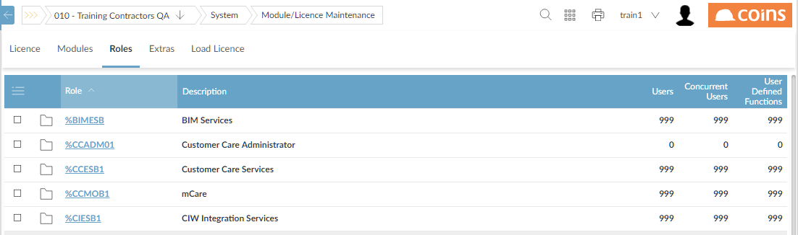
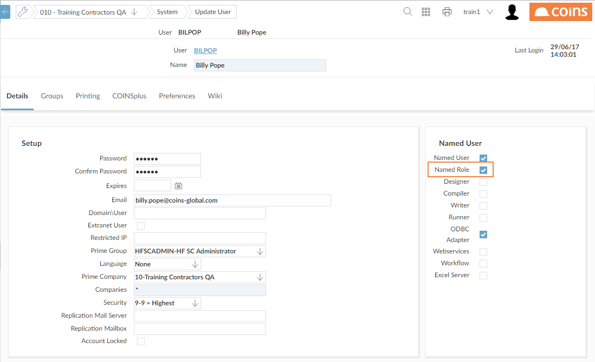
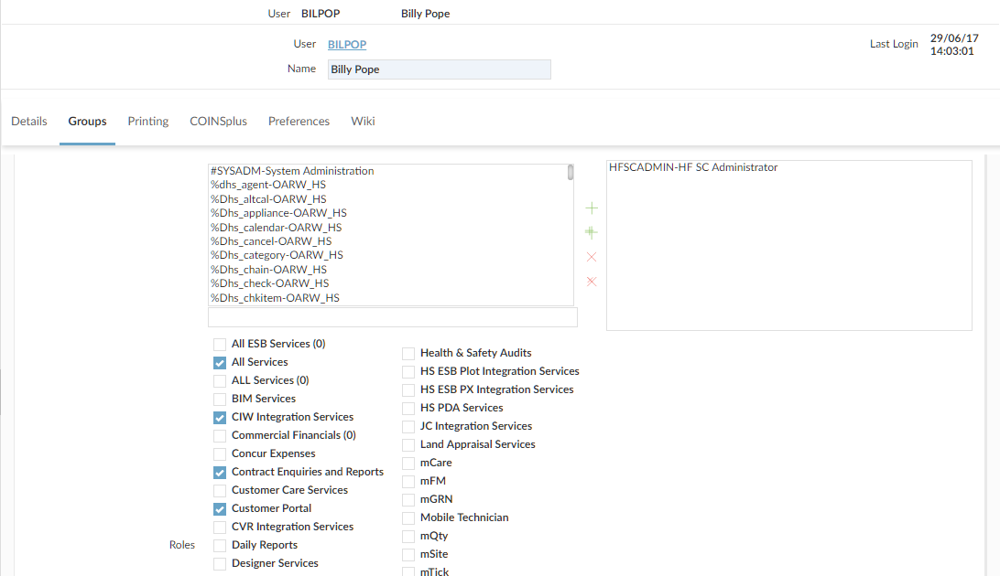

Role-Based Licensing
Many users will use only a few functions and, maybe, only occasionally. Role-based licensing provides a cost-effective way of giving access for large numbers of users to small but important parts of . Role-based licensing uses the concept of "named role" users; these do not count as regular concurrent licensed users. Your determines the number of "named role" users you can have.
Roles are pre-defined by Construction Industry Solutions, and issued as part of standard data. Each role has a limited number of functions that it provides access to. Each "named role" user can be assigned to one or more roles (thus giving them access to one or more groups of functions); they will only be allowed to run the functions associated with those roles. You must give them access (using standard function access) to the top-level module menu for any functions they will need to run (for example, %WPL for any functions), but automatically gives access to any submenus needed. You can use standard function access to prevent "named role" users from accessing specific functions within the role; however, you cannot grant them access to additional functions outside their role.
Named role users always have access to basic lookups, some system functions such as
Report Status and
Activity Workbench, and the documentation. See
Access to Mandatory Functions.
You cannot change which standard (%) functions belong to a role, but you can add non-standard (that is, user-defined) functions to existing roles, up to the number allowed by your .
Using roles to allow access for named users
You can also assign roles to standard named users, to grant them access to the functions of the role in addition to other group and function access. These users will be counted against the concurrent user count, and the number of concurrent users you can assign each role to is determined by your .
If the role is being used to grant access to a concurrent user, will NOT recogne which parts of the menu tree are needed to access a function, so you will need to configure these using standard function access methods.
Setting up role-based licensing
- In Module/ Maintenance, there is a Roles tab, which lists the available roles; enter the number of users (role-based and concurrent) licensed for each role and the number of user-defined functions that can be assigned to it, as shown on your .

You can also access this using F10 - Role in the Named Users field via /COINSadmin.
- In Users, for each user you want to set up as a "named role" user, open the user record and click the Details tab, and the Named Role box. (The Named User box must also be ed.)

- Then click the Groups tab and each role you want to assign to them.

Adding user-defined functions to a role
If you have set up user-defined functions, you can add these to a role, to allow any users who are assigned to that role to run them in addition to the standard functions associated with the role. The number of user-defined functions you can add to each role is determined by your .
- Go to Module/ Maintenance.
- Click the link for the role you want to add functions to.
- Click the User Defined tab.
- Add the user-defined functions.